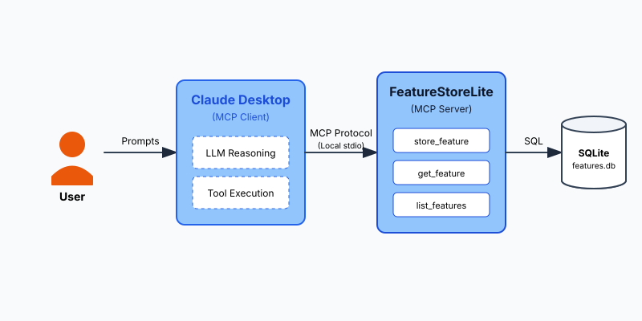
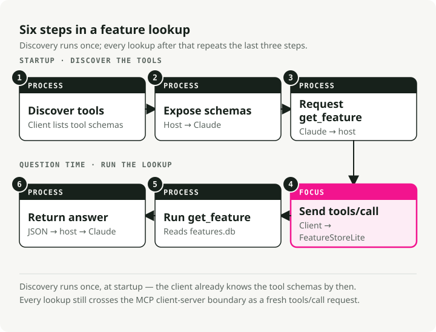
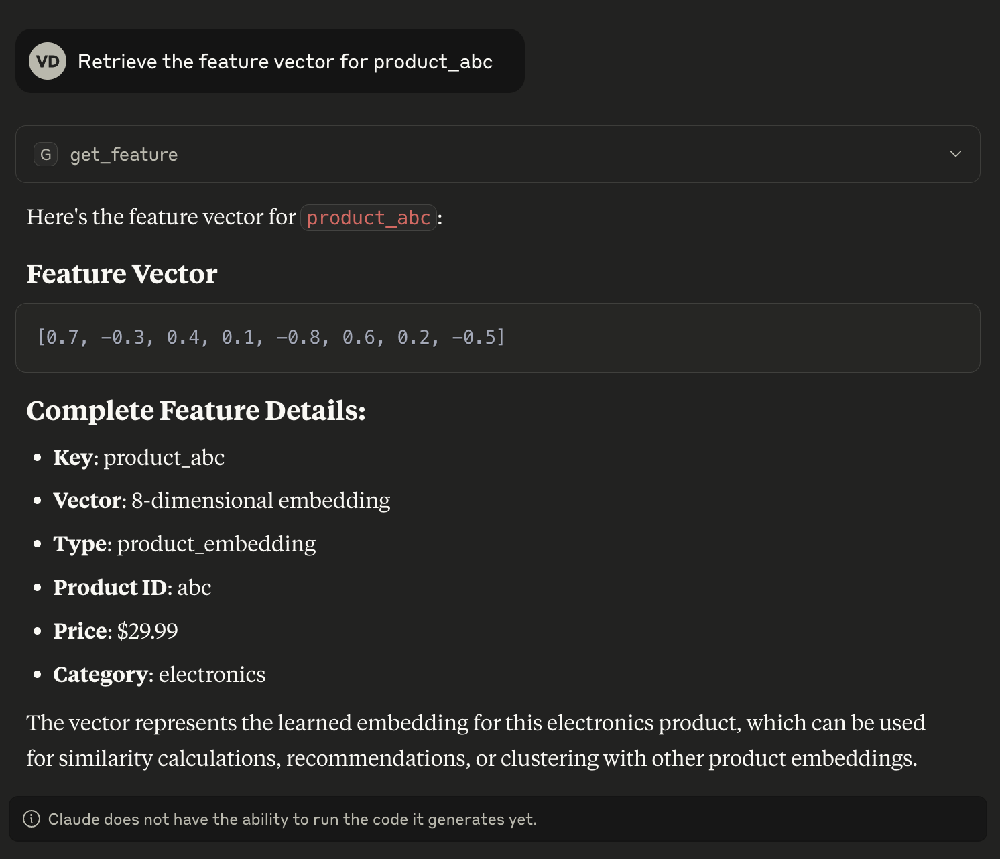

MCP Server Tutorial with uv and FastMCP: Build a FeatureStoreLite Server
This MCP server tutorial builds a small feature store server with FastMCP, runs it with uv, and wires it into Claude Desktop.
What is an MCP server?
The Model Context Protocol (MCP) is an open standard for connecting AI assistants like Claude to external data and tools. One protocol, one set of conventions, instead of a fresh integration for every tool you want to expose.
In this tutorial we'll build a FeatureStoreLite MCP server. It sits between an LLM and a feature store (a database of precomputed ML features), and exposes tools for querying and writing feature vectors keyed by user, product, or document.
Why build this?
You are an ML engineer debugging a pipeline. Instead of dropping into SQL or writing a quick script to check feature values, you ask Claude directly: "What is the feature vector for user_123?" or "Show me the metadata for product_abc." The MCP server is what makes that possible.
Why use uv?
We'll use uv, a Python package installer and project manager that's much faster than pip and handles dependency resolution and virtualenvs in one tool. The other reason: uv run --with mcp[cli] ... lets us declare dependencies inline in the Claude Desktop config later, so there's no separate venv to keep in sync.
Architecture overview
The four pieces and how they fit together:

- The user asks a question in natural language.
- Claude Desktop is the MCP client. It picks a tool based on the question and calls it.
- Our
FastMCPserver exposesget_featureandstore_featureas MCP tools. - SQLite is the backing store for the feature vectors.
2. Setup and Installation
2.1. Install uv
If you don't already have uv, install it. The rest of the tutorial assumes it's on your PATH.
# macOS/Linux
curl -LsSf https://astral.sh/uv/install.sh | sh
# Or via Homebrew
brew install uv
2.2. Initialize the Project
Create a new directory and initialize a Python project. uv init creates a pyproject.toml for you.
# Create project directory
mkdir mcp-featurestore
cd mcp-featurestore
# Initialize Python project
uv init
# Add the MCP SDK with CLI tools
uv add "mcp[cli]"
3. Building the Server
Two files, split by concern:
database.pyhandles SQLite operations.featurestore_server.pydefines the MCP server.
3.1. The database layer (database.py)
This module owns the SQLite connection and a couple of helpers. We seed it with two example rows so the server has something to return on the first query.
Create database.py:
# database.py
import json
import os
import sqlite3
def get_db_path() -> str:
"""Get the database path - always in the script's directory"""
script_dir = os.path.dirname(os.path.abspath(__file__))
return os.path.join(script_dir, "features.db")
def init_db() -> None:
"""Initialize the feature store database with table and sample data"""
conn = sqlite3.connect(get_db_path())
conn.execute("""
CREATE TABLE IF NOT EXISTS features (
key TEXT PRIMARY KEY,
vector TEXT NOT NULL,
metadata TEXT,
created_at TIMESTAMP DEFAULT CURRENT_TIMESTAMP
)
""")
# Sample data for experimentation
example_features = [
(
"user_123",
"[0.1, 0.2, -0.5, 0.8, 0.3, -0.1, 0.9, -0.4]",
json.dumps({"type": "user", "id": 123, "segment": "premium"}),
),
(
"product_abc",
"[0.7, -0.3, 0.4, 0.1, -0.8, 0.6, 0.2, -0.5]",
json.dumps({"type": "product", "id": "abc", "category": "electronics"}),
),
]
# Insert if not exists
for key, vector, metadata in example_features:
try:
conn.execute(
"INSERT INTO features (key, vector, metadata) VALUES (?, ?, ?)",
(key, vector, metadata),
)
except sqlite3.IntegrityError:
pass # Already exists
conn.commit()
conn.close()
def get_db_connection() -> sqlite3.Connection:
"""Get a database connection"""
return sqlite3.connect(get_db_path())
if __name__ == "__main__":
init_db()
print("✅ Database initialized successfully!")
Initialize the database:
uv run python database.py
3.2. The MCP server (featurestore_server.py)
FastMCP does most of the work. Decorate a plain Python function and it gets registered as an MCP tool or resource. The docstring becomes the description the LLM sees, so write it for an LLM, not just for humans.
Create featurestore_server.py:
# featurestore_server.py
import json
from mcp.server.fastmcp import FastMCP
from database import get_db_connection, init_db
# Initialize the MCP Server
mcp = FastMCP("FeatureStoreLite")
# Ensure DB is ready when server starts
init_db()
@mcp.resource("schema://main")
def get_schema() -> str:
"""
Resource: Provide the database schema.
Resources are passive data that LLMs can read like files.
"""
conn = get_db_connection()
try:
schema = conn.execute(
"SELECT sql FROM sqlite_master WHERE type='table'"
).fetchall()
return "\n".join(sql[0] for sql in schema if sql[0]) or "No tables found."
finally:
conn.close()
@mcp.tool()
def store_feature(key: str, vector: str, metadata: str | None = None) -> str:
"""
Tool: Store a feature vector.
Tools are executable functions that LLMs can call to perform actions.
"""
conn = get_db_connection()
try:
# Validate that vector is valid JSON
json.loads(vector)
conn.execute(
"INSERT OR REPLACE INTO features (key, vector, metadata) VALUES (?, ?, ?)",
(key, vector, metadata),
)
conn.commit()
return f"Successfully stored feature '{key}'"
except json.JSONDecodeError:
return "Error: Vector must be a valid JSON array string (e.g., '[0.1, 0.2]')"
except Exception as e:
return f"Error: {str(e)}"
finally:
conn.close()
@mcp.tool()
def get_feature(key: str) -> str:
"""
Tool: Retrieve a feature vector by key.
"""
conn = get_db_connection()
try:
row = conn.execute(
"SELECT vector, metadata FROM features WHERE key = ?", (key,)
).fetchone()
if row:
return json.dumps(
{
"key": key,
"vector": json.loads(row[0]),
"metadata": json.loads(row[1]) if row[1] else None,
},
indent=2,
)
return f"Feature '{key}' not found."
finally:
conn.close()
@mcp.tool()
def list_features() -> str:
"""
Tool: List all available feature keys.
"""
conn = get_db_connection()
try:
rows = conn.execute("SELECT key FROM features").fetchall()
return json.dumps([row[0] for row in rows])
finally:
conn.close()
if __name__ == "__main__":
mcp.run()
4. Testing with MCP Inspector
Before wiring this into Claude, sanity-check the server with the MCP Inspector. It's a small web UI for calling tools and reading resources directly.
uv run mcp dev featurestore_server.py
The command starts the server and opens the Inspector in your browser (usually at http://localhost:5173).

Call get_feature with key="user_123". If it returns the JSON for the seed row, the server is working.
5. Connecting to Claude Desktop
Once the Inspector confirms the server works, register it with Claude Desktop.
5.1. Configure Claude
Edit your Claude Desktop configuration file:
- macOS:
~/Library/Application Support/Claude/claude_desktop_config.json - Windows:
%APPDATA%/Claude/claude_desktop_config.json
Add your server to the mcpServers object:
{
"mcpServers": {
"featurestore": {
"command": "uv",
"args": [
"run",
"--with",
"mcp[cli]",
"mcp",
"run",
"/ABSOLUTE/PATH/TO/mcp-featurestore/featurestore_server.py"
]
}
}
}
Important: the path to
featurestore_server.pyhas to be absolute. A relative path will fail silently because Claude Desktop runs from a different working directory.
5.2. How the interaction works
Here's what runs end to end when Claude needs a feature lookup:

- Claude sees the available tools (
get_feature,list_features, and so on). - It decides the question needs data from the feature store.
- It builds a tool call and sends it to your server.
- The server runs the Python function and returns the result.
- Claude uses that result to write the final answer.
5.3. Example queries
Restart Claude Desktop and try a few prompts:
-
"List all available features."

-
"Get the feature vector for user_123."

-
"Store a new feature for 'new_item' with vector [0.5, 0.5] and metadata {'type': 'test'}."
6. Troubleshooting
A few failure modes worth knowing about:
-
"Server connection failed":
- Check the logs at
~/Library/Logs/Claude/mcp.logon macOS. - Confirm the config uses an absolute path, not a relative one.
- Confirm
uvis on Claude Desktop'sPATH. If it isn't, point at the full binary path (which uvwill tell you where it lives).
- Check the logs at
-
"Tool execution error":
- Reproduce it in the Inspector with
uv run mcp dev featurestore_server.py. The Inspector shows the raw error, which Claude Desktop usually swallows. - Check that
features.dbis being created next todatabase.py. If your working directory shifts, the script-relative path inget_db_path()is what saves you.
- Reproduce it in the Inspector with
7. Conclusion
That's the whole thing: a FastMCP server, a SQLite backing store, and a Claude Desktop config that points at a uv run command. The same shape works for anything you can wrap in a Python function. Swap the SQLite calls for a real feature store, an internal API, or a model registry, and the server stays small.